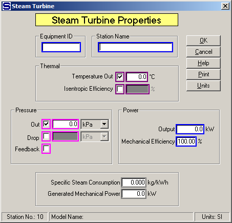

Equipment ID An equipment ID of up to 11 characters can be used to identify the station with an actual station in the process. Any combination of numbers and letters that are used in the factory/refinery to identify equipment can be entered. For example, Equipment ID = 123.456A. It is not necessary to make an entry in the Equipment ID field if the station in the model does not have a corresponding station in the factory/refinery.
Station Name A name of up to 20 characters must be entered for the station. For example, Station Name = Turbine Drive.
Sugars will calculate values for the Thermal and Pressure entry fields during the balance calculations based on the values entered. For example, if Temperature Out is entered along with a value for either the Pressure Out or Drop or the Feedback box is checked, Sugars will calculate the Isentropic Efficiency for the turbine. Conversely, if the Isentropic Efficiency is entered, the Temperature Out will be calculated. The calculate values will be displayed if the activation boxes for these fields are clicked after the balance calculations are completed.
Thermal Select either Temperature Out or Isentropic Efficiency along with a Pressure selection to define the energy removed from the steam flow by the turbine. Maroon colored borders are used to indicate that only one of these two fields can be selected.
Temperature Out Enter the temperature of the vapor leaving the turbine. The temperature and pressure of the steam flow out of the turbine will determine the amount of energy transferred to the turbine from the steam. For example, Temperature Out = 145.8°C.
Isentropic Efficiency Enter the isentropic efficiency for the turbine. The isentropic efficiency is the percentage of the actual enthalpy change to the enthalpy change with no change in entropy. Sometimes this is called the "Internal Turbine Efficiency". For example, Isentropic Efficiency = 68.3%
Pressure The Out, Drop or Feedback pressure can be selected to define the pressure change of the steam flow as it passes through the turbine. Just click on the small box next to the selected entry field to activate the field. Magenta colored borders are used to indicate that only one of the entries can be selected.
Discharge Enter the Discharge pressure for the flow out of the turbine. The value entered for the Discharge Pressure will be held during the balance calculations. For example, Discharge = 320 kPa.
Drop Enter the drop in pressure of the steam as it passes through the turbine. The output pressure of the steam will then be based on the pressure of the steam into the station less the value entered for the Drop. For example, Drop = 1,800.0 kPa.
Feedback Left click the check box to use pressure feedback to define the pressure of the flow leaving the turbine. For example, if the flow out goes to a receiver that has another input flow with a pressure value, the pressure value will be passed back to the turbine as the pressure out.
Power An Output power with Mechanical Efficiency can be specified for the turbine. Entering a value for the Output will make the steam flow into the turbine a required flow and the steam flow to the turbine must be supplied to the turbine from a source that can supply a required flow; for example, an external flow or a flow from a distributor station (even if the flow goes through other stations before it gets to the turbine station, the flow must originate from either a distributor or be an external flow).
Output Enter the Output power to be produced by the turbine. If an entry is made for the Output power, the steam flow into the turbine will be a required flow; that is, the quantity of steam into the turbine necessary to produce the specified power will be calculated by Sugars. For example, Power Output = 3,000.0 kW. However, if the quantity of steam into the turbine is known, or the exhaust steam from the turbine is required by another station (that is, the exhaust steam is a required flow), then enter 0.0 for the Power Output and Sugars will calculate the power produced by the turbine for the quantity of steam passing through it.
Mechanical Efficiency Enter the Mechanical Efficiency of the turbine to allow for the loss of power in the mechanical drive to convert the thermal energy from the turbine to shaft power. For example, Mechanical Efficiency = 99.0%.
Specific Steam Consumption The Specific Steam Consumption of the turbine will be calculated by Sugars during the balance calculations. No entry can be made in this field, but the calculated value will be displayed after the balance calculations are completed.
Generated Mechanical Power The output power from the turbine will be calculated by Sugars during the balance calculations. No entry can be made in this field, but the calculated value will be displayed after the balance calculations are completed.